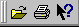

XMM-Newton Science Analysis System
sas (gui-1.52.10) [xmmsas_20170112_1337-16.0.0]
Tool bar
The main screen of the SAS GUI has a tool bar. Clicking on one of the buttons will perform a function.

Currently, the tool bar supports the following tools:
XMM-Newton SOC/SSC -- 2017-01-12